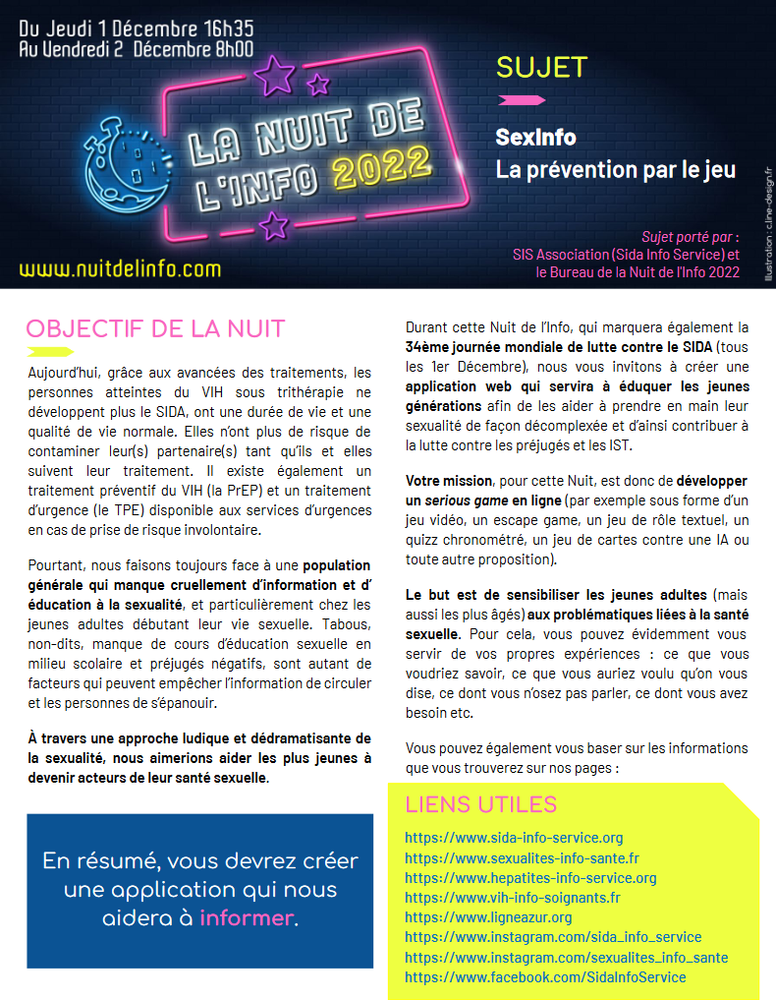

1er et 2 Décembre 2022
La Nuit de l'info est une compétition nationale de développement web. Chaque année, les équipes participent au défi principal présenté le jour même (le sujet) mais aussi à d'autres petits défis organisés par des entreprises.
Cette année, le sujet de la Nuit de l'Info était porté par l'association Sida Info Service.
Il fallait donc créer un site de sensibilisation aux problématiques liées à la santé sexuelle tout incluant un serious game sur le même thème.
La nuit de l'info ne dure qu'une après-midi et une nuit.
Pour ce qui est du site en lui-même, nous avons utilisé du HTML/CSS. Ceux qui ont travaillé sur le jeu ont utilisé Unity et C#
Nous étions une équipe de 10 personnes comprenant des étudiants de première et deuxième année. Nous nous étions réparti le travail en trois sous-équipes :
Je faisais partie de la dernière équipe.
Notre jeu est un Tower Defense dont le but était d'empêcher les MST d'atteindre la tour.
Le site se compose de plusieurs parties :
Pour ma part, j'ai travaillé sur l'accueil du site.
Cette nuit de l'info m'a appris à travailler efficacement dans un temps réduit et avec une équipe très grande.
J'y ai aussi découvert le SCSS et les transitions CSS grâce aux étudiants de deuxième année qui nous aidaient.
Lien du site :